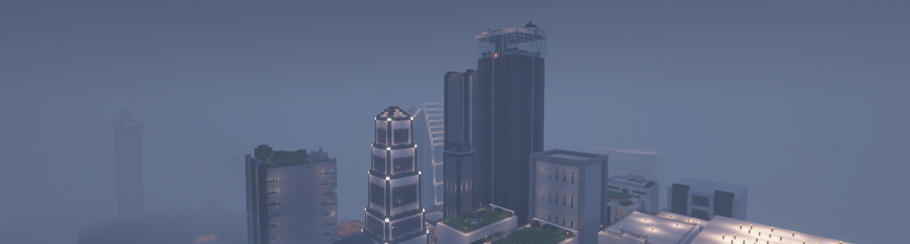

This page goes over the history behind OwOCraft and also what OwOCraft is.
The People Apart of the (primary area) of OwOCraft Government is:
logzinga
Rainbow_Tilleh
Website Developers (Rainbow_Tilleh, LionProGaming37)
OwOCraft is a Minecraft SMP founded by Internal_Void_ and logzinga. There has been many seasons and remakes of the server, with it's original members, JBSteely, Tbone226, Internal_Void_ and logzinga. Since the begining of OwOCraft in 2017, many members have joined and are still joining, keeping the server alive and thriving.
For a while now, OwOCraft has added some helpful plugins to the server, but in OwOCraft 12, a new system was added; the milestones.
Eventful lore has occured in the many seasons of OwOCraft, some of the most notable seasons for history are OwOCraft 11, OwOCraft 9 and OwOCraft 8. These OwOCraft's were the first seasons to actually have lore happen on the server.
In the season 11 of OwOCraft, we used the world of OwOCraft 9, which ended with little notice.
The server operator is logzinga, who owns and runs the OwOCraft servers.